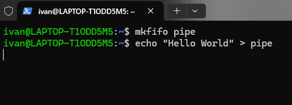
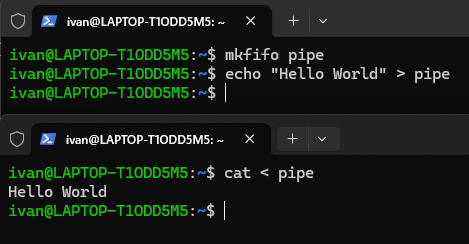
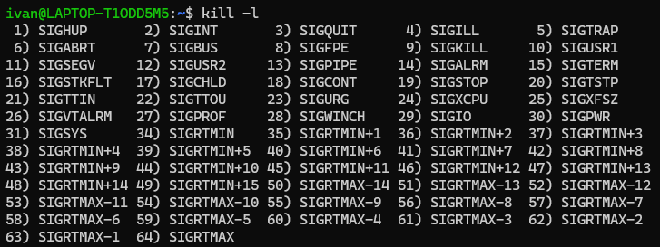

操作系统额外内容 - 1
参考文献
- https://zhuanlan.zhihu.com/p/465574868
- https://zhuanlan.zhihu.com/p/367591714
- https://www.bilibili.com/video/BV1qJ411w7du
进程间通信方式 IPC
在 操作系统课上内容中，我们可以看到课上对进程的内容如下
- Process Creation
- Process Termination
- Process State
往后就是重点的线程内容了。但进程和进程有着很大的区别，比如进程的内存隔离更加严格，一个进程不能直接访问另一个进程的地址空间，也就是说，进程间要进行信息交换就必须通过内核。因此也导致像互斥锁这种简单的通信方案在进程上并不适用。因此需要通过其他方式解决。
管道
管道的本质，就是内核在内存里开辟的一块缓冲区；它对外表现为一个文件，因此进程的读写可以像读写文件一样操作它，但它不属于磁盘上的文件系统，只存在于内存中。
匿名管道 Pipe
该管道通过 pipe() 系统调用创建的管道。它
- 只能用于有亲缘关系的进程，如父子进程。
- 半双工，因此数据只能向一个方向流动。
- 没有名字，数据只存在内存中。其生命周期随着进程结束而消失。
当我们敲 Linux 指令，如 ps | grep "io" 时，其中的 | 就是匿名管道。
有名管道 FIFO
有名管道 FIFO 的名字是由其先进先出的特性决定的。所谓的有名管道，就是提供一个路径名与之关联。这样，任意进程，只要可以访问该路径，就可以通过这个有名管道进行相互通信。
一个有名管道的完整流程如下
首先需要使用 mkfifo 命令创建一个有名管道，然后往里面放数据。

可以发现现在该命令行卡住了。此时需要另一个命令行（就是另一个进程）去读取这里的数据。

而通过 mkfifo 创建的管道其实就可以当作一份文件实体，该管道会存在于文件系统中，需要通过 rm 删除。
消息队列
消息管道效率仍然较低，不适合频繁交换数据。因此消息传递机制（也就是消息队列）应运而生。进程 A 要给进程 B 发消息，A 进程去消息队列发就可以了，然后 B 进程需要的时候就去消息队列读取。
消息队列的本质是存放在内存中的消息的链表而消息本质上就是用户自定义的数据结构。而且，消息队列也可以实现消息的随即查询，而不一定要先进先出。
消息队列的生命周期随内核而定，只要没有手动释放消息队列，或者没有关闭操作系统，消息队列就会一直存在。
由于消息队列在存入数据和拿出数据时都会发生从用户态到内核态（或反过来）的交换过程，所以在数据量较大时，性能可能不高。
通过系统调用，可以实现消息队列的创建/打开，发送信息，接收，控制/删除这四种操作。
共享内存
共享内存的出现主要是为了避免像消息队列一样频繁拷贝信息的问题。顾名思义，共享内存就是允许不相干的进程将同一段物理内存连接到它们各自的地址空间中，从而使得这些进程可以访问同一个物理内存。如果某个进程向共享内存中写入数据，其所做的改动将立即影响同一片共享内存的任何其他进程。这是最快的一种通信方式。
信号量
本质上是共享内存中的同步与互斥机制，只用于并发控制，其 PV 操作此处不做赘述。
信号 Signal
信号是一种软中断。这是进程通信机制中唯一的异步通信机制，可以在任何时候发送信号给某个进程，从而迫使进程执行信号处理程序。

socket
最通用，最常见的通信方式。此处不赘述。
多路复用
阻塞式 IO
进程/线程在进行 IO 的整段时间都是被阻塞的。一个 IO 请求会阻塞一条线程，需要额外处理。
非阻塞式 IO
进程发起 IO 系统调用后，如果内核缓冲区没有数据，需要到设备中读取，那么进程会返回一个错误而不会被堵塞；若有数据则会将数据返回进程。
信号驱动 IO
当进程发起一个 IO 时，会向内核注册一个信号处理函数，然后进程返回不阻塞。
当内核数据就绪时会发送一个信号给进程，进程便在信号处理函数中调用 IO 读取数据。
异步 IO
当进程发起一个 IO 操作，进程返回，不阻塞，也不返回结果；内核处理完后会通知进程结果。如果 IO 操作成功，则直接获取到数据。
IO复用
在 Linux 的缓存 IO 机制中，操作系统会先将 IO 数据缓存到文件系统的页缓存（Page Cache）中，也就是内核态的缓冲区，之后再将数据拷贝到应用程序的用户态地址空间。这个过程会在用户态与内核态之间发生多次数据拷贝，带来明显的 CPU 与内存开销。
但这种设计又是必需的：因为出于安全与稳定性考虑，不能允许应用程序直接操作底层硬件设备。
IO 多路系统调用
IO 多路复用就是通过一种机制，让一个进程监视多个描述符，一旦某个描述符就绪，就能够通知程序进行相应的读写操作。于多进程。多线程技术相比，IO 多路复用技术最大的优势是系统开销小，系统不必创建和维护这些进程/线程。
为什么不用多进程？因为多进程存在上下文切换的成本，在高并发状态下有很大开销。
select
该函数的核心作用是，让程序同时监听多个文件的描述符（File Descriptor FD）的可读/可写/异常事件，当其中任意一个 FD 满足条件时，函数返回并通知程序处理事件。
Linux 中 select 函数的原型为
1 | |
成功时返回就绪的 FD 总数（可读 + 可写 + 异常）；若返回 0 则表示超时（无 FD 就绪），若返回 -1 则出错。
该函数的跨平台性好，且简单易懂，但该函数存在以下问题
- FD 大小是固定的，在 Linux 中固定为 1024，无法监听超过限制的 FD。
- 每次调用
select都要遍历 0 到 nfds - 1 的所有 FD，无法监听超过限制的 FD。 select会修改传入的 fd_set，因此每次调用前都要重新初始化集合。select只告诉程序“有 FD 就绪”，但不知道是哪个，还需要遍历。
此处的3个 FD 集合都是全为0的位图。在调用函数时，系统将这些集合从用户态传到内核态，然后当有 FD 就绪时，就给 FD 编号对应位置1，因此说每一次都会修改集合。
poll
poll 是 select 的改进版，解决了后者数量受限等痛点。
其原型为
1 | |
此处的入参使用动态长度的 pollfd 数组代替固定大小的 fd_set，从而可以监听到任意数量的 FD。
select 会直接修改传入的 readfds/writefds 集合，因此每次调用 select 前都必须重新初始化集合（因为既然是监听那肯定是放在 while(1) 里面的）。在 select 的基础上，poll 用结构体单独描述每个 FD 的监听需求和改进状态，避免了 select 中修改集合的问题。
poll 把监听的事件和实际发生的事件进行分离。因此只需要在 FD 监听需求变化时更新 events，而无需在每次调用 poll 都重新初始化数组。
1 | |
返回值表示的含义与 select 一致。并且其存在的某些问题其实和 select 是一样的，也就是没有优化大量 FD 复制于用户态和内核态地址空间之间，以及部分描述符就绪就触发整体描述符集合全部遍历的低效问题。
epoll
前两者都要遍历所有 FD，比较低效。而 epoll 则解决了这个问题，转为高并发场景而生。
epoll 创建了一个内核级的“事件表”，只需要将 FD 一次性注册到列表中而无需在每次调用后都传递。同时，内核主动记录就绪的 FD，仅返回就绪的 FD 列表，无需遍历所有监听的 FD。除此之外，epoll 同时支持水平出发 LT 和边缘触发 ET。
该接口一共有三个函数
epoll_create
1 | |
该函数生成一个 epoll 函数专用的 FD。在 Linux 2.6.8 后，size 参数默认被忽略，现在只需要填写任意一个大于0的值就好。其返回值返回 poll 专用的 FD，失败则为 -1。
epoll_ctl
1 | |
op 参数表示动作，用三个宏表示
EPOLL_CTL_ADD（添加）EPOLL_CTL_MOD（修改）EPOLL_CTL_DEL（删除）
epoll 事件注册函数。它不同于 select 是在监听事件时告诉内核，要监听什么类型的事件，而是在这里要先注册要监听的事件类型。
其中的 epoll_event 是核心结构体。
1 | |
常用监听的事件有以下几种
EPOLLINFD 可读。这里面也包括 socket 正常关闭。EPOLLOUTFD 可写EPOLLLETFD 的边缘触发 ET 模式，默认是 LTEPOLLONESHOTFD 只监听一次事件，出发后需要重新注册
返回0表示成功，返回1表示失败。
epoll_wait
1 | |
epoll 事件就绪函数。等待事件的产生，收集在 epoll 监控事件中已经发送的事件。成功时返回需要处理的事件数目，0时表示超时，-1时表示失败。
注册好了的 FD 在内核态中以红黑树结构存储。而就绪的 FD 会被内核转移到“就绪链表”中。当无 FD 就绪时，epoll_wait 会让进程进入睡眠状态，让出 CPU。当内核检测到某个 FD 就绪时，会把该 FD 从红黑树中取出（或标记），加入链表，并唤醒就绪线程（也就是回调）。线程被唤醒后，epoll_wait 直接从就绪链表中拷贝就绪的 FD 信息到用户态，返回给程序。
epoll 系列接口只有在 epoll_ctl 方法在写入时需要将数据从用户态拷贝到内核态，只有在 epoll_wait 方法中读取已就绪事件时将已就绪的事件从内核态拷贝到用户态。
如果并发数只有几个或十几个，那么其实 poll 更有优势。但在高并发场景下一般用 epoll。
协程
有了线程这个概念为什么要需要协程？先看看线程的痛点。
线程的核心痛点
线程虽然实现了并发，但它是内核态的调度单位，因此也就导致了以下几个问题
- 切换/调度开销极大。在调度时需要做上下文切换，每次切换时耗时为微妙级，在高并发场景下会被无限放大。
- 内存开销高。每个线程会默认分配几 MB 的空间（Linux 下默认为 8MB），在多个线程时占用空间巨大。
- 线程是抢占式调度，操作系统随时可能打断线程。多个线程操作共享数据时容易产生死锁等问题。
- 实际业务中，大部分并发场景都是 IO 密集型。线程在执行这些任务时，绝大部分时间都在等待，但线程在等待时，仍然会占用大量资源。
协程的概念
协程是用户态的轻量级的线程，可以通俗理解为“可以暂停和恢复的函数”。
- 其切换开销极小，仅需要保存函数暂停点，可以达到纳秒级。
- 内存开销低，由于其可以看作是一种函数，因此它占用的是栈空间，初始仅几 KB。
- 协程是非抢占式调度。
- 对于 IO 密集型任务，协程在遇到等待时会主动暂停并交出控制权，让其他协程执行。
协程的作用，实在执行函数 A 时，可以随时中断，去执行另一个函数 B，然后再次中断继续执行函数 A。但这一过程并不是函数调用，因为没有调用语句，这一整个过程看似像多线程，然而协程只有一个线程执行。
虚拟线程
在 Java 中，协程的概念也叫做虚拟线程。详情看并发的文章